כשהגוף כבר מאותת
מבחוץ הכל מתפקד. מבפנים, זה נראה קצת אחרת. כאבי ראש שחוזרים, גב תפוס, עייפות שלא עוברת גם אחרי לילה שלם. את הולכת לישון, כמעט נרדמת, ונזכרת בעוד משהו שצריך לעשות מחר.
אולי את מחזיקה בית, משפחה ועבודה, ודואגת שלכולם יהיה טוב. ואולי את עוד מחכה לבית משלך, שומעת בעוד חתונה של חברה שוב ״בקרוב אצלך״, וחוזרת הביתה עם אאוץ׳ בלב.
כך או כך, את דורשת מעצמך הרבה, ואחר כך גם מבקרת את עצמך על מה שלא הספקת. לפעמים את מגיבה בעלבון או בכעס, ולא מבינה מאיפה זה הגיע.
ובשקט, רק בינך לבין עצמך, את שואלת: ״על פניו הכל בסדר. אז למה אני לא שמחה כמו שחשבתי שאהיה?״
זה לא שמשהו לא בסדר איתך,
אלא שהגוף והנפש מדברים באותה שפה.
כשהעומס, הדאגות והאחריות לא מוצאים מקום, הם פשוט מתיישבים בגוף: בראש, בגב, בשינה, בעייפות. ולכן משככי כאבים לא עוזרים, כי הם לא מטפלים בעומס. ואת מנסה להיות חזקה ולהמשיך הלאה, אבל מה שאת צריכה זה לחבר בין מה שקורה בגוף לבין מה שעובר עלייך בחיים.
אין לך באמת איפה להניח את זה, אבל אצלי יש: מרחב של הקשבה, שיתוף, הבנה והתקדמות.
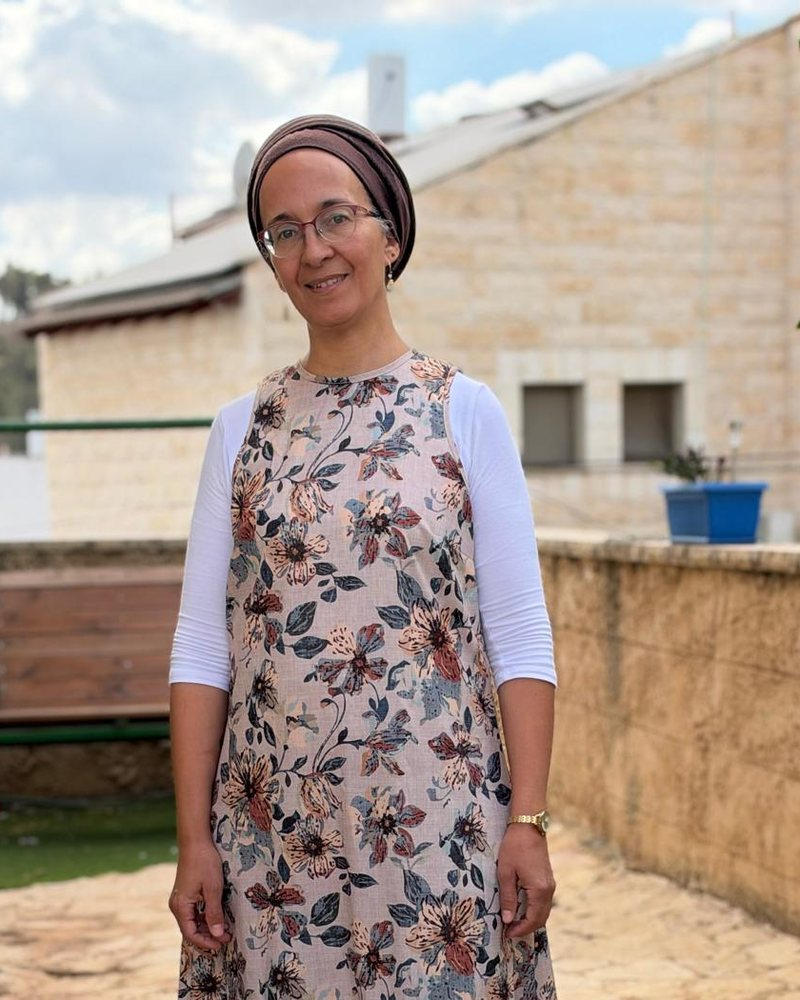
נעים מאוד, אני צופיה
בתור נערה הייתה לי בעיה רפואית שהרפואה הרגילה לא הצליחה לפתור, והדיקור עזר לי. תוך כדי הטיפולים גיליתי משהו שלא ציפיתי לו: את הצד הרגשי והנפשי שיש בדיקור.
כבר התקבלתי ללימודי פסיכולוגיה בבר־אילן, אבל החיבור בין הגוף לנפש קנה אותי. הלכתי ללמוד ולהתמקצע, ובמשך השנים הוספתי עוד כלים שנותנים לטיפול עומק ותוקף. היום אני מלווה נשים שהגוף שלהן כבר מאותת, ומתחילה איתן בדיוק משם. מודה לבורא עולם על הזכות להגשים את הייעוד שלי.
הקליניקות שלי נמצאות במודיעין עילית וברעות. את לא צריכה להגיע עם הסבר מסודר. מספיק להגיע.
במה אני מטפלת
הגוף והנפש מגיעים ביחד, ולכן גם הטיפול. אלה דוגמאות לכאבים או קשיים שנשים מגיעות איתם.
כאבי ראש ומיגרנות
כאבים שחוזרים שוב ושוב, ולא תמיד ברור למה. בודקות יחד מה מעורר אותם, ועובדות על הרפיה של הגוף והראש.
גב, צוואר וכתפיים
מקומות שבהם הגוף אוגר את העומס. הדיקור עוזר לשחרר את מה שנתקע, והשיחה עוזרת להבין מה מעמיס.
בעיות שינה ועייפות מתמשכת
קושי להירדם, התעוררויות בלילה, או קימה בבוקר בלי כוח. מחזירות לגוף את האפשרות לנוח באמת.
עומס, מתח וביקורת עצמית
כשאת מחזיקה הכל ואין מקום לעצמך. התמציות והשיחה עוזרות להוריד את המתח והביקורת, ולמצוא שוב את הקול שלך.
ערפל וקשיי ריכוז
תחושה שהראש לא צלול, שקשה להתרכז בלימודים או בעבודה. מטופלות מספרות על בהירות שחוזרת.
תקופות מעבר וחוסר ודאות
המתנה, שינוי או תקופה לא ברורה בחיים. מקום שקט להתחזק, להתייצב ולצמוח מתוך התקופה.
מתחילים מהגוף, ומגיעים למה שמתחת
בכל מפגש משולבים שלושה כלים, לפי מה שאת צריכה באותו יום.
דיקור סיני
מחטים דקות מאוד שעוזרות לגוף לשחרר את מה שנתקע, ולחזק את מה שצריך חיזוק.
פרחי באך
תמציות עדינות שנבחרות במיוחד בשבילך, ומלוות אותך גם בין המפגשים.
שיחה מותאמת
מרחב שקט להבין מה הגוף מנסה להגיד, ולמצוא דרך שמתאימה לך.
תמציות עדינות, שמותאמות במיוחד בשבילך
פרחי באך הם 38 תמציות פרחים, שפיתח הרופא האנגלי ד״ר אדוארד באך. כל תמצית קשורה לתחושה או למצב רגשי מסוים: דאגה, פחד, עומס, חוסר סבלנות, קושי להחליט.
במפגש אנחנו מבינות יחד מה את מרגישה עכשיו, ואני מרכיבה לך פורמולה אישית. את לוקחת אותה הביתה, כמה טיפות כמה פעמים ביום, והיא מלווה אותך גם בין המפגשים.
- 38תמציות פרחים
- 1פורמולה אישית, רק בשבילך
- יום־יוםליווי עדין בין המפגשים
כשאת מרגישה…
יש תמצית שנועדה בדיוק לזה.
מה כותבות לי על הטיפות
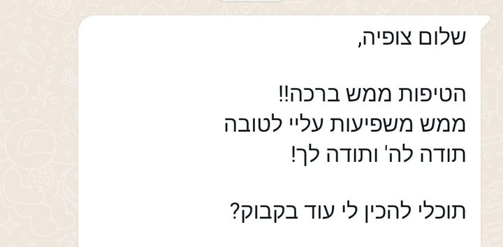
תהליך ממוקד, שינוי אמיתי מבפנים
זה לא עוד טיפול נקודתי שמקל לכמה ימים. זה תהליך ממוקד של שמונה מפגשים, שעושה שינוי פנימי אמיתי: בגוף, ברגש, ובדרך שבה את מגיבה לחיים.
- שיחת היכרות קצרהכותבת לי בוואטסאפ, ומדברות כמה דקות על מה שעובר עלייך עכשיו.
- מפגש ראשוןמתחילים ממה שאת מרגישה. בלי צורך להסביר הכל, ובלי לדעת מראש מה הכאב העמוק.
- תהליך של שמונה מפגשיםממוקד ומותאם אישית, בקצב שלך. כאן קורה השינוי הפנימי, זה שנשאר איתך גם אחרי שהתהליך נגמר.
להרגיש שוב יציבה ושלווה
במילים שלהן
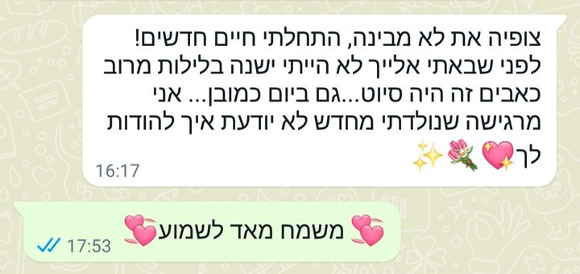
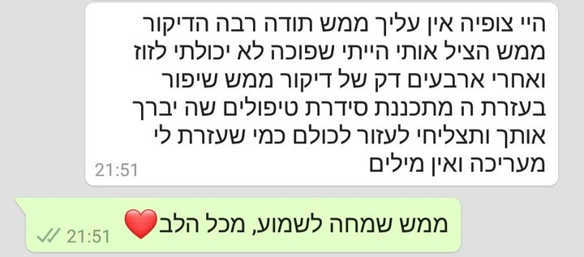
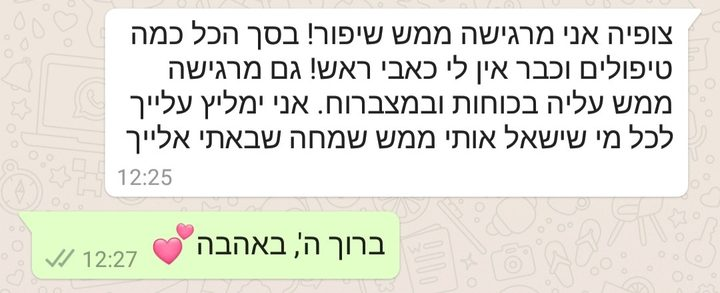
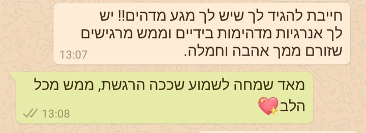
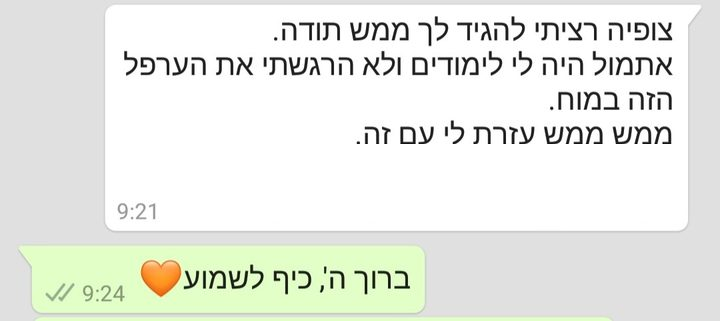
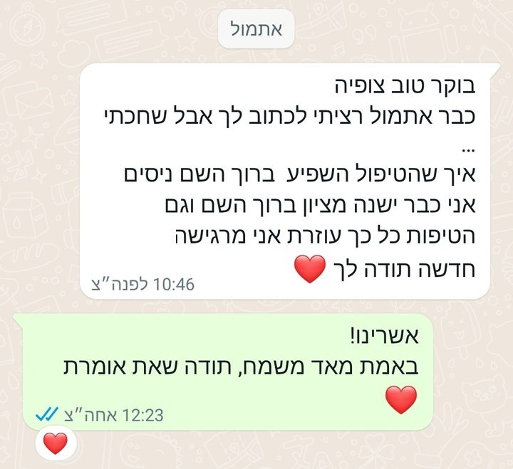
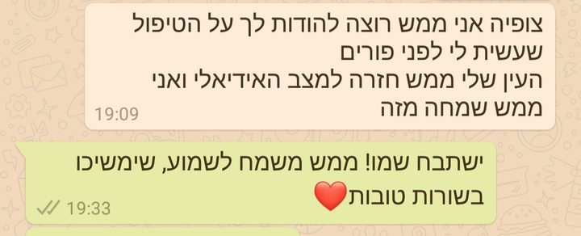
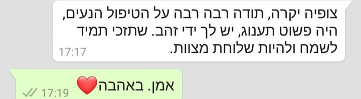
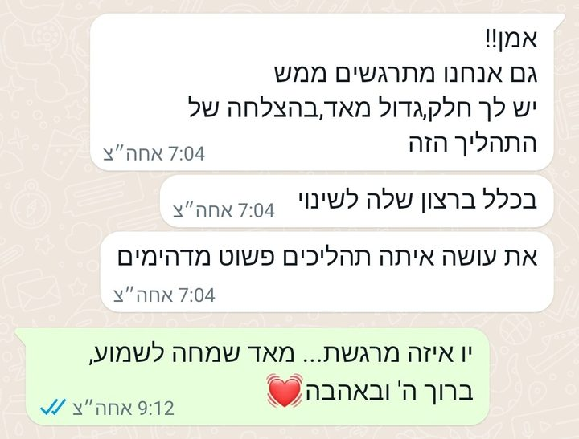
החליקי לעוד הודעות ←
צילומי מסך מהוואטסאפ של צופיה, בלי פרטים מזהים.
לפני שמתחילים
אני לא יודעת בדיוק מה מפריע לי. זה מתאים לי?
כן, בוודאי. לא צריך לדעת מראש מה הכאב העמוק. מתחילים ממה שאת מרגישה עכשיו, בגוף ובלב, ומשם מתקדמים.
דיקור כואב?
המחטים מאוד דקות ועדינות. לפעמים ההחדרה שלהן מורגשת, אבל זה ממש לרגע. לרוב לא מרגישים משהו מטריד.
אפשר לטפל גם בהריון?
כן. פרחי באך מתאימים גם בהריון, בלי שום בעיה. בדיקור יש נקודות שאסור לדקור בהריון, ואני פשוט לא משתמשת בהן.
פרחי באך יכולים לגרום נזק?
לא. פרחי באך לא יכולים לגרום נזק, כי הם פועלים בצורה שתמיד מושכת לכיוון האיזון, ולא דווקא מעלים או מורידים משהו.
כמה מפגשים צריך?
אני ממליצה על תהליך של שמונה מפגשים, ואם תרצי, תמיד אפשר להמשיך. כשתבואי ואשמע אותך, אוכל להגיד לך בצורה מדויקת יותר מה מתאים לך.
איפה מתקיימים המפגשים?
במודיעין עילית או ברעות.
זה מחליף טיפול רפואי?
לא. זה עובד לצד הרפואה הקונבנציונלית ומשלים אותה.
אפשר להתחיל ממה שאת מרגישה עכשיו
לא צריך לחכות שזה יחמיר כדי לעצור, מספיק שמשהו מרגיש לך כבד מדי.
כתבי לי הודעה, ונקבע שיחת היכרות קצרה. בלי התחייבות, ובלי צורך להסביר הכל.